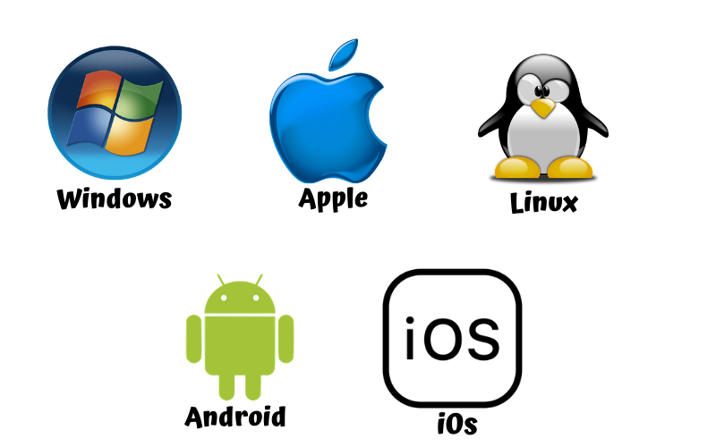

Software de sistema

Software de sistema o software base, como prefieran llamarlo, ambos términos hacen referencia a lo mismo: se trata del software que permite funcionar a nuestros dispositivos. Sin el software de sistema no sería posible usar un móvil, una computadora o una tableta, permite interactuar con un dispositivo por medio de su hardware.
Este software base está compuesto principalmente por el sistema operativo y por los drivers o controladores, y en menor medida también podemos incluir a las librerías dentro de esta categoría.